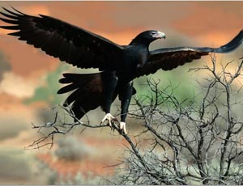
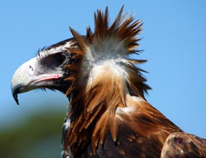

The Wedge-tailed Eagle (Aquila audax), sometimes known as the Eaglehawk (an unfitting name, as it is among the largest raptors) in its native range, is the largest bird of prey in Australia, but it is also found in southern New Guinea. It has long, fairly broad wings, fully feathered legs, and an unmistakable wedge-shaped tail. Because of both its tail and its size it is one of the largest birds of prey in the world it can be identified at a glance as a "Wedgie" even by the non-expert. The Wedge-tailed Eagle is one of twelve species of large predominantly dark-coloured eagles in the genus Aquila found worldwide. A large brown bird of prey, it has a wingspan of up to 2.27 metres (7.4 ft) and a length up to 1.04 metres.
 15.11.2011